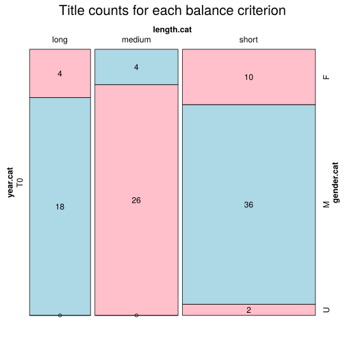

Click on a column heading to sort. Click on a text identifier to read the text (may not work in older browsers).
| Identifier | Encoding | Pages | Words | (Size) | Date (Slot) | Title | Author | Sex | Reprints |
|---|---|---|---|---|---|---|---|---|---|
| FRA200000 |
eltec-1 | 18553 | (short) | 1794 (T0) | Voyage autour de ma chambre | Xavier de Maistre(1763-1852) | M | unspecified | |
| FRA20001 |
eltec-1 | 48709 | (short) | 1794 (T0) | Adèle de Senange | Adélaïde de Souza(1761-1836) | F | unspecified | |
| FRA20002 |
eltec-1 | 61040 | (medium) | 1761 (T0) | Daïra. Histoire orientale | Alexandre Jean Joseph Le Riche de La Popelinière(1693-1762) | M | unspecified | |
| FRA20003 |
eltec-1 | 89104 | (medium) | 1789 (T0) | Correspondance secrète entre Ninon de Lenclos, le Marquis de Villarceaux et Madame M. | Alexandre-Joseph-Pierre vicomte de Ségur(1756-1805) | M | unspecified | |
| FRA20004 |
eltec-1 | 17423 | (short) | 1784 (T0) | Bergeries et opuscules de Mlle d'Ormoy l'aînée | Anne-Jeanne-Félicité Mérard de Saint-Just (1765-1830) | F | unspecified | |
| FRA20005 |
eltec-1 | 30309 | (short) | 1778 (T0) | Mémoires de Suzon, soeur de Dom Bougre | Anonym | U | unspecified | |
| FRA20006 |
eltec-1 | 147640 | (long) | 1760 (T0) | Le monde moral, | Antoine François Prévost(1697-1763) | M | unspecified | |
| FRA20007 |
eltec-1 | 36273 | (short) | 1782 (T0) | L'ami des Enfants | Arnaud Berquin(1747-1791) | M | unspecified | |
| FRA20008 |
eltec-1 | 35510 | (short) | 1758 (T0) | Les pensées errantes ; avec quelques lettres d'un Indien | Bonne-Charlotte de Bénouville(N/A-N/A) | F | unspecified | |
| FRA20009 |
eltec-1 | 10820 | (short) | 1751 (T0) | Histoire de la Félicité | Claude Henri de Fusée de Voisenon(1708-1775) | M | unspecified | |
| FRA20010 |
eltec-1 | 12647 | (short) | 1761 (T0) | Les Amours de Mirtil | Claude Louis Michel de Sacy(1749-1794) | M | unspecified | |
| FRA20011 |
eltec-1 | 31179 | (short) | 1755 (T0) | La Nuit et le moment, ou les Matines de Cythère, dialogue | Claude Prosper Jolyot de Crébillon(1707-1777) | M | unspecified | |
| FRA20012 |
eltec-1 | 135187 | (long) | 1751 (T0) | Ah quel conte ! | Claude Prosper Jolyot de Crébillon (1707-1777) | M | unspecified | |
| FRA20013 |
eltec-1 | 180995 | (long) | 1771 (T0) | Lettres athéniennes extraites du porte-feuille d'Alcibiade | Claude Prosper Jolyot de Crébillon (1707-1777) | M | unspecified | |
| FRA20014 |
eltec-1 | 67933 | (medium) | 1772 (T0) | Les Malheurs de l'inconstance ou Lettres de la marquise de Circé et du comte de Mirbelle | Claude-Joseph Dorat (1734-1780) | M | unspecified | |
| FRA20015 |
eltec-1 | 69716 | (medium) | 1771 (T0) | Les Sacrifices de l’amour | Claude-Joseph Dorat(1734-1780) | M | unspecified | |
| FRA20016 |
eltec-1 | 53300 | (medium) | 1798 (T0) | Sophie de Beauregard, ou Le véritable amour | Comtesse de Lagrave (1770-1820) | F | unspecified | |
| FRA20017 |
eltec-1 | 68088 | (medium) | 1798 (T0) | Zabeth, ou la Victime de l'ambition | Comtesse de Lagrave(N/A-N/A ) | F | unspecified | |
| FRA20018 |
eltec-1 | 31383 | (short) | 1862 (T0) | Le Neveu de Rameau | Denis Diderot(1713-1784) | M | unspecified | |
| FRA20019 |
eltec-1 | 78202 | (medium) | 1796 (T0) | La Religieuse | Denis Diderot(1713-1784) | M | unspecified | |
| FRA20020 |
eltec-1 | 87238 | (medium) | 1796 (T0) | Jacques le fataliste et son maître | Denis Diderot(1713-1784) | M | unspecified | |
| FRA20021 |
eltec-1 | 49370 | (short) | 1787 (T0) | Les Infortunes de la vertu | Donatien de Sade(1740-1814) | M | unspecified | |
| FRA20022 |
eltec-1 | 63119 | (medium) | 1791 (T0) | La Philosophie dans le boudoir | Donatien de Sade(1740-1814) | M | unspecified | |
| FRA20023 |
eltec-1 | 109927 | (long) | 1791 (T0) | Justine ou les Malheurs de la vertu | Donatien de Sade(1740-1814) | M | unspecified | |
| FRA20024 |
eltec-1 | 298809 | (short) !! | 1795 (T0) | Aline et Valcour ou le roman philosophique | Donatien de Sade(1740-1814) | M | unspecified | |
| FRA20025 |
eltec-1 | 86483 | (medium) | 1753 (T0) | Naufrage des Iles Flottantes | Étienne-Gabriel Morelly(1717-1782) | M | unspecified | |
| FRA20026 |
eltec-1 | 130001 | (long) | 1778 (T0) | Lettres de Stéphanie, roman historique | Fanny de Beauharnais(1737-1813) | F | unspecified | |
| FRA20027 |
eltec-1 | 29729 | (short) | 1786 (T0) | Mémoires de Mme de Warens, suivis de ceux de Claude Anet | François Amédée Doppet (1753-1799) | M | unspecified | |
| FRA20028 |
eltec-1 | 66190 | (medium) | 1798 (T0) | Les Cinquante francs de Jeannette, par le Cen Ducray-Duminil | François Guillaume Ducray-Duminil(1761-1819) | M | unspecified | |
| FRA20029 |
eltec-1 | 28964 | (short) | 1769 (T0) | François marquis de Barbé-Marbois(1745-1837) | M | unspecified | ||
| FRA20030 |
eltec-1 | 43857 | (short) | 1761 (T0) | Le Colporteur | François-Antoine Chevrier(1721-1762) | M | unspecified | |
| FRA20031 |
eltec-1 | 26582 | (short) | 1768 (T0) | L’Homme aux quarante écus | François-Marie Arouet Voltaire(1694-1778) | M | unspecified | |
| FRA20032 |
eltec-1 | 27224 | (short) | 1768 (T0) | La Princesse de Babylone | François-Marie Arouet Voltaire(1694-1778) | M | unspecified | |
| FRA20033 |
eltec-1 | 31921 | (short) | 1759 (T0) | Candide, ou l'Optimisme | François-Marie Arouet Voltaire (1694-1778) | M | unspecified | |
| FRA20034 |
eltec-1 | 13017 | (short) | 1767 (T0) | Lucie et Mélanie ou les deux sœurs généreuses | François-Thomas-Marie de Baculard d’Arnaud(1718-1805) | M | unspecified | |
| FRA20035 |
eltec-1 | 14367 | (short) | 1767 (T0) | Clary ou le retour à la vertu récompensé | François-Thomas-Marie de Baculard d’Arnaud(1718-1805) | M | unspecified | |
| FRA20036 |
eltec-1 | 17121 | (short) | 1767 (T0) | Julie ou l’heureux repentir, anecdote historique par M. d’Arnaud | François-Thomas-Marie de Baculard d’Arnaud(1718-1805) | M | unspecified | |
| FRA20037 |
eltec-1 | 17766 | (short) | 1764 (T0) | Fanny, histoire anglaise | François-Thomas-Marie de Baculard d’Arnaud(1718-1805) | M | unspecified | |
| FRA20038 |
eltec-1 | 77779 | (medium) | 1766 (T0) | Elisabeth | Françoise-Albine Puzin de La Martinière Benoist(1724-1809) | F | unspecified | |
| FRA20039 |
eltec-1 | 132662 | (long) | 1797 (T0) | L’Émigré | Gabriel Sénac de Meilhan(1736-1803) | M | unspecified | |
| FRA20040 |
eltec-1 | 67505 | (medium) | 1765 (T0) | Imirce ou la Fille de nature | Henri-Joseph Dulaurens (1719-1793) | M | unspecified | |
| FRA20041 |
eltec-1 | 145307 | (long) | 1766 (T0) | Le Compère Mathieu ou les Bigarrures de l'esprit humain | Henri-Joseph Dulaurens (1719-1793) | M | unspecified | |
| FRA20042 |
eltec-1 | 37127 | (short) | 1783 (T0) | Ma Conversion ou le Libertin de qualité | Honoré-Gabriel Riqueti de Mirabeau(1749-1791) | M | unspecified | |
| FRA20043 |
eltec-1 | 40530 | (short) | 1786 (T0) | Le Rideau levé ou l'éducation de Laure | Honoré-Gabriel Riqueti de Mirabeau(1749-1791) | M | unspecified | |
| FRA20044 |
eltec-1 | 38827 | (short) | 1795 (T0) | Trois Femmes | Isabelle de Charrière(1740-1805) | F | unspecified | |
| FRA20045 |
eltec-1 | 49906 | (short) | 1787 (T0) | Lettres écrites de Lausanne | Isabelle de Charrière(1740-1805) | F | unspecified | |
| FRA20046 |
eltec-1 | 14914 | (short) | 1788 (T0) | L'Honneur perdu et recouvré | Jacques Cazotte(1719-1792) | M | unspecified | |
| FRA20047 |
eltec-1 | 42343 | (short) | 1772 (T0) | Le Diable amoureux | Jacques Cazotte(1719-1792) | M | unspecified | |
| FRA20048 |
eltec-1 | 58982 | (medium) | 1763 (T0) | Ollivier | Jacques Cazotte(1719-1792) | M | unspecified | |
| FRA20049 |
eltec-1 | 13446 | (short) | 1791 (T0) | Chaumière Indienne | Jacques Henri Bernardin de Saint-Pierre(1737-1814) | M | unspecified | |
| FRA20050 |
eltec-1 | 60490 | (medium) | 1787 (T0) | Paul et Virginie | Jacques Henri Bernardin de Saint-Pierre(1737-1814) | M | unspecified | |
| FRA20051 |
eltec-1 | 0000 | (short) | 1800 (T0) | Jacques Salbigoton Quesné | M | unspecified | ||
| FRA20052 |
eltec-1 | 67540 | (medium) | 1790 (T0) | La Fin des amours de Faublas | Jean-Baptiste Louvet de Couvrai(1760-1797) | M | unspecified | |
| FRA20053 |
eltec-1 | 118821 | (long) | 1787 (T0) | Une année dans la vie du chevalier de Faublas | Jean-Baptiste Louvet de Couvray(1760-1797) | M | unspecified | |
| FRA20054 |
eltec-1 | 17436 | (short) | 1791 (T0) | Nouveau voyage sentimental | Jean-Claude Gorgy(1753-1795) | M | unspecified | |
| FRA20055 |
eltec-1 | 43694 | (short) | 1767 (T0) | Bélisaire | Jean-François Marmontel(1723-1799) | M | unspecified | |
| FRA20056 |
eltec-1 | 109786 | (long) | 1777 (T0) | Les Incas ou la destruction de l'empire du Pérou | Jean-François Marmontel(1723-1799) | M | unspecified | |
| FRA20057 |
eltec-1 | 259051 | (long) | 1762 (T0) | Émile ou de l'éducation | Jean-Jacques Rousseau(1712-1778) | M | unspecified | |
| FRA20058 |
eltec-1 | 306149 | (long) | 1761 (T0) | Julie, ou La nouvelle Héloïse | Jean-Jaques Rousseau (1712-1778) | M | unspecified | |
| FRA20059 |
eltec-1 | 24397 | (short) | 1783 (T0) | Galatée | Jean-Pierre Claris de Florian (1755-1794) | M | unspecified | |
| FRA20060 |
eltec-1 | 31348 | (short) | 1788 (T0) | Estelle | Jean-Pierre Claris de Florian (1755-1794) | M | unspecified | |
| FRA20061 |
eltec-1 | 71336 | (medium) | 1786 (T0) | Numa Pompilius | Jean-Pierre Claris de Florian (1755-1794) | M | unspecified | |
| FRA20062 |
eltec-1 | 31132 | (short) | 1797 (T0) | La Dot de Suzette, ou Histoire de Mme de Senneterre racontée par elle-même | Joseph Fiévée(1767-1839) | M | unspecified | |
| FRA20063 |
eltec-1 | 66862 | (medium) | 1783 (T0) | Dolbreuse ou l'Homme du siècle ramené à la vérité par le sentiment et la raison | Joseph de Loaisel de Tréogate(1752-1812) | M | unspecified | |
| FRA20064 |
eltec-1 | 28332 | (short) | 1779 (T0) | La Comtesse d'Alibre | Joseph Marie Loaisel de Tréogate(1752-1812) | M | unspecified | |
| FRA20065 |
eltec-1 | 69612 | (medium) | 1788 (T0) | Ainsi finissent les grandes passions, ou les Dernières amours du chevalier de *** | Joseph Marie Loaisel de Tréogate(1752-1812) | M | unspecified | |
| FRA20066 |
eltec-1 | 36592 | (short) | 1798 (T0) | Firmin ou le Jouet de la fortune | Joseph Rosny(1771-1814) | M | unspecified | |
| FRA20067 |
eltec-1 | 34000 | (short) | 1785 (T0) | Eusèbe, ou les Beaux profits de la vertu dans le siècle où nous vivons | Laveaux, Jean-Charles (1749-1827) | M | unspecified | |
| FRA20068 |
eltec-1 | 130313 | (long) | 1767 (T0) | La nouvelle Clarice, histoire véritable | Leprince de Beaumont, Jeanne-Marie (1711-1780) | F | unspecified | |
| FRA20069 |
eltec-1 | 47089 | (medium) !! | 1799 (T0) | Louis François Marie Bellin de La Liborlière(1774-1847) | M | unspecified | ||
| FRA20070 |
eltec-1 | 89260 | (medium) | 1771 (T0) | L'An deux mille quatre cent quarante, rêve s'il en fut jamais | Louis-Sébastien Mercier (1740-1814) | M | unspecified | |
| FRA20071 |
eltec-1 | 78687 | (medium) | 1776 (T0) | Jezennemours | Louis-Sébastien Mercier(1740-1814) | M | unspecified | |
| FRA20072 |
eltec-1 | 25958 | (short) | 1758 (T0) | Histoire du marquis de Cressy | Marie-Jeanne Riccoboni(1713-1792) | F | unspecified | |
| FRA20073 |
eltec-1 | 31956 | (short) | 1757 (T0) | Lettres de Fanni Butler à Milord Charles Alfred de Caitombridge | Marie-Jeanne Riccoboni(1713-1792) | F | unspecified | |
| FRA20074 |
eltec-1 | 49218 | (short) | 1767 (T0) | Lettres d'Adelaïde de Dammartin, comtesse de Sancerre, à M. le Comte de Nancé, son ami | Marie-Jeanne Riccoboni(1713-1792) | F | unspecified | |
| FRA20075 |
eltec-1 | 94338 | (medium) | 1764 (T0) | Histoire de Miss Jenny, écrite et envoyée par elle à Miladi, comtesse de Roscomond | Marie-Jeanne Riccoboni(1713-1792) | F | unspecified | |
| FRA20076 |
eltec-1 | 21570 | (short) | 1775 (T0) | Zély | Marie-Louise Auget de Monthyon, Madame de Fourqueux(N/A-N/A) | F | unspecified | |
| FRA20077 |
eltec-1 | 65462 | (medium) | 1796 (T0) | Histoire de Sara | Nicolas Rétif de la Bretonne(1734-1806) | M | unspecified | |
| FRA20078 |
eltec-1 | 227440 | (long) | 1776 (T0) | Le Paysan perverti ou les Dangers de la ville | Nicolas Rétif de la Bretonne(1734-1806) | M | unspecified | |
| FRA20079 |
eltec-1 | 55477 | (medium) | 1798 (T0) | L'Anti-Justine | Nicolas-Edme Rétif de la Bretonne (1734-1806) | M | unspecified | |
| FRA20080 |
eltec-1 | 189721 | (long) | 1784 (T0) | La paysanne pervertie ou Les dangers de la ville | Nicolas-Edme Rétif de la Bretonne (1734-1806) | M | unspecified | |
| FRA20081 |
eltec-1 | 13585 | (short) | 1774 (T0) | La Nouvelle Clémentine, ou Lettres de Henriette du Berville | Nicolas-Germain Léonard(1744-1793) | M | unspecified | |
| FRA20082 |
eltec-1 | 60594 | (medium) | 1783 (T0) | Lettres de deux amants habitants de Lyon | Nicolas-Germain Léonard(1744-1793) | M | unspecified | |
| FRA20083 |
eltec-1 | 62780 | (medium) | 1769 (T0) | Nicolas-Thomas Barthe(1736-1785) | M | unspecified | ||
| FRA20084 |
eltec-1 | 169233 | (long) | 1774 (T0) | Le Comte de Valmont ou les égarements de la raison, lettres recueillies et publiées | Philippe Louis Gérard(1737-1813) | M | unspecified | |
| FRA20085 |
eltec-1 | 135186 | (long) | 1782 (T0) | Les Liaisons dangereuses | Pierre Choderlos de Laclos (1741-1803) | M | unspecified | |
| FRA20086 |
eltec-1 | 59702 | (medium) | 1761 (T0) | Les aventures de Periphas, descendant de Cécrops | Puget de Saint-Pierre(N/A-N/A) | M | unspecified | |
| FRA20087 |
eltec-1 | 60629 | (medium) | 1798 (T0) | Révéroni Saint-Cyr(1767-1829) | M | unspecified | ||
| FRA20088 |
eltec-1 | 46369 | (short) | 1784 (T0) | L'Étourdi | Robert-André Andréa de Nerciat | U | unspecified | |
| FRA20089 |
eltec-1 | 97095 | (medium) | 1775 (T0) | Félicia ou mes Fredaines | Robert-André Andréa de Nerciat(1738-1800) | M | unspecified | |
| FRA20090 |
eltec-1 | 101746 | (long) | 1764 (T0) | Les Aphrodites | Robert-André Andréa de Nerciat(1738-1800) | M | unspecified | |
| FRA20091 |
eltec-1 | 163248 | (long) | 1789 (T0) | Le crime, ou Lettres originales, contenant les aventures de César de Perlencour | Robert-Martin Lesuire(1737-1815) | M | unspecified | |
| FRA20092 |
eltec-1 | 203298 | (long) | 1782 (T0) | L'Aventurier François ou Mémoires de Grégoire Merveil | Robert-Martin Lesuire(1737-1815) | M | unspecified | |
| FRA20093 |
eltec-1 | 259602 | (long) | 1787 (T0) | Laure, ou Lettres de quelques personnes de Suisse | Samuel de Constant de Rebecque(1729-1800) | M | unspecified | |
| FRA20094 |
eltec-1 | 39110 | (short) | 1798 (T0) | Claire d’Albe | Sophie Cottin(1770-1807) | F | unspecified | |
| FRA20095 |
eltec-1 | 181276 | (long) | 1795 (T0) | Les Chevaliers du cygne | Stéphanie Félicité Ducrest de Saint-Aubin de Genlis(1746-1830) | F | unspecified | |
| FRA20096 |
eltec-1 | 245641 | (long) | 1782 (T0) | Adèle et Théodore | Stéphanie Félicité Ducrest de Saint-Aubin de Genlis(1746-1830) | F | unspecified | |
| FRA20097 |
eltec-1 | 13080 | (short) | 1753 (T0) | Amilec, ou la Graine d'Hommes qui sert à peupler les planètes | Tiphaigne de La Roche(1722-1774) | M | unspecified | |
| FRA20098 |
eltec-1 | 36394 | (short) | 1765 (T0) | Histoire des Galligènes | Tiphaigne de La Roche(1722-1774) | M | unspecified | |
| FRA20099 |
eltec-1 | 33165 | (short) | 1787 (T0) | Vathek | William Beckford(1760-1844) | M | unspecified |